электронный
ресурс по учебной дисциплине 1-58 01 01 - "ИНЖЕНЕРНО-ПСИХОЛОГИЧЕСКОЕ ОБЕСПЕЧЕНИЕ ИНФОРМАЦИОННЫХ ТЕХНОЛОГИЙ"
|
||
| Оглавление | Программа | Теория | Практика| Контроль знаний | Об авторах | ||
|
Содержание
ТЕМА 3 ЭПИТАКСИАЛЬНЫЕ ТЕХНОЛОГИИ § 3.1 Технология получения эпитаксиальных слоев § 3.2 Технологическое оборудование для эпитаксии § 3.3 Выбор оптимальной технологии § 3.1 Технология получения эпитаксиальных слоев Эпитаксия из газовой фазы. Этот раздел посвящен химическим процессам, проходящим в эпитаксиальном реакторе, технологическому оборудованию процесса, а также возможностям рассматриваемого метода. Эпитаксиальное выращивание кремния из парогазовой фазы обычно проводят в реакторе, изготовленном из стеклообразного кварца, на помещенном внутри его пьедестале (подложкодержателе). Пьедестал служит для установки подложек и их нагрева во время процесса. Выращивание кремния проводится в потоке парогазовой смеси при высокой температуре. В таких условиях возможно протекание нескольких химических реакций. Газ-носитель, обычно используемый при эпитаксии, — водород. Для выращивания эпитаксиального кремния используются четыре кремнийсодержащих реагента. Это тетрахлорид кремния (SiCl4), трихлорсилан (SiHCl3), дихлорсилан (SiH2Cl2) и силан (SiH4). Тетрахлорид кремния изучен лучше других и наиболее широко используется в производстве. На примере тетрахлорида кремния рассмотрим химические процессы, протекающие в реакторе. Способ анализа, изложенный ниже, применим и к другим хлорсодержащим соединениям. Суммарная реакция может быть классифицирована как водородное восстановление Si из SiCl4: SiС14газ + 2H2raз àSiтв + 4НС1газ. 3.1 Все указанные реакции обратимые, и, следовательно, при соответствующих условиях скорость роста может стать отрицательной, т. е. начнется процесс травления. Здесь обсуждение подходит к наиболее важному вопросу о зависимости скорости роста от температуры. При высоких и низких температурах скорость роста имеет отрицательные значения (рис.3.1). 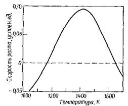 Рисунок 3.1 – Зависимость скорости роста от температуры при нанесении кремния химическим осаждением из парогазовой фазы Легирование и автолегирование. Для легирования обычно используют гидриды примесных элементов. В среде водорода указанные гидриды относительно устойчивы, что согласуется с термодинамическими расчетами. Химические свойства легирующих соединений удобно рассмотреть на примере арсина как наиболее типичного представителя таких соединений. Существует тесная взаимосвязь между процессами роста и легирования. Во-первых, при легировании бором и мышьяком идет параллельная реакция образования их хлоридов. Во-вторых, скорость роста влияет на количество встраиваемой в эпитаксиальный слой примеси (рис. 3.2). При низких скоростях роста между твердой и газообразной фазами устанавливается равновесие, недостижимое при высоких скоростях роста.
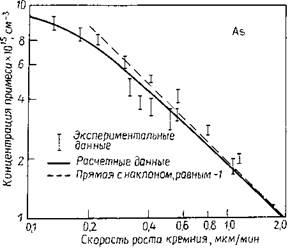 Рисунок 3.2 – Влияние скорости роста на концентрацию легирующей примеси (As) в эпитаксиальном слое Кроме намеренно вводимой примеси в слой входят и неконтролируемые примеси из подложки. Это явление называется автолегированием. Механизм автолегирования представлен на рис. 3.3.
1— диффузия примеси из подложки; 2 — десорбция примеси с обратной и боковой поверхностей подложки; 3 — направление основного газового потока; 4—адсорбция примеси на поверхности подложки; 5 — подложкодержатель; 6 — эпитаксиальный реактор; 7 — специально вводимая легирующая примесь; 8 — примесь, десорбирующая с других подложек и подложкодержателя; 9 — слой; 10 — подложка Рисунок 3.3 – Схематическое изображение вероятных источников примесей в горизонтальном реакторе До настоящего момента мы рассматривали равновесные или установившиеся процессы. Если же поток легирующей примеси в реактор резко прервать, это не приведет к быстрому изменению уровня легирования, что указывает на большую инертность процесса легирования. Молекулярно-лучевая эпитаксия не имеет этого недостатка. В добавление к химической отмывке подложек непосредственно перед нанесением эпитаксиального слоя обычно проводят газофазное травление безводным НС1 при температуре 1200 °С, при этом идут реакции
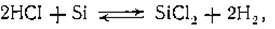 3.2
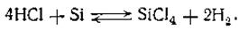 3.3 Использование НС1 выгодно отличается тем, что он легко компримируемый газ. НС1 вводится в основной поток водорода с концентрацией 2—3%. Скорость травления — несколько десятых микрона в минуту, а толщина стравливаемого кремния для подложек без скрытого слоя достигает 5 мкм. Когда требуется сохранить низкое значение поверхностного сопротивления скрытых слоев, толщина стравливаемого кремния составляет 0,1—0,3 мкм. В результате травления поверхность подложки становится достаточно чистой, свободной от естественного окисла. Однако этот процесс не может заменить предэпитаксиальной химической отмывки. Вместо травления в газовой фазе допускается проведение высокотемпературного отжига подложек в атмосфере водорода (в течение 10 мин при 1200°С). § 3.2 Технологическое оборудование для эпитаксии. Современный стандартный реактор имеет массу 2000 кг и занимает площадь 2 м2 или немного больше (рис. 3.4).
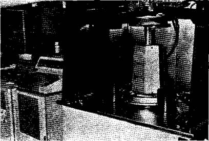 Рисунок 3.4 – Цилиндрический реактор с радиационным нагревом Рассмотрим некоторые вопросы, связанные с обеспечением безопасности персонала при эксплуатации эпитаксиального оборудования. В реакторах, как правило, предусмотрено достаточное количество блокировок, чтобы предотвратить возможные несчастные случаи. При обслуживании оборудования необходимо удалять и утилизировать продукты реакции и обеспечивать правильную подачу технологических газов в реактор. Некоторые возможные опасные ситуации необходимо рассмотреть подробно: взрыв или возгорание водорода, сильную коррозию при использовании НС1 и, что представляет наибольшую опасность, высокую токсичность легирующих газов. Арсин, например, вызывает мгновенную смерть, если его концентрация во вдыхаемом воздухе превышает 250-10-4%. При нахождении в атмосфере с небольшим содержанием арсина (35*10-4%) воздействие его на здоровье усиливается с увеличением длительности пребывания в отравленной атмосфере. Схема устройства реакционного блока представлена на рис. 3.5. В целях защиты окружающей среды для удаления непрореагировавших газов и продуктов реакции из потока газа-носителя используют скруббер, имеющий большую поверхность взаимодействия газов с водой.
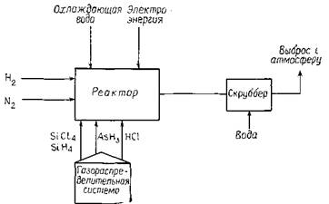 Рисунок 3.5 – Функциональная схема эпитаксиального реактора Подложкодержатель в эпитаксиальном реакторе выполняет роль тигля в процессе выращивания кристаллов. Он обеспечивает механическое закрепление пластины и является нагревателем в случае реакторов с индукционным нагревом. Геометрическая форма или конфигурация подложкодержателя обычно определяет название реактора. На рис. 3.6, а показаны три основных вида подложкодержателей: горизонтальный (плоский), вертикальный (дискообразный) и бочкообразный (цилиндрический); ниже они будут рассмотрены более подробно. Как и тигель, подложкодержатель должен быть механически прочным и не загрязнять реакционную среду. Кроме того, он не должен вступать в химические реакции с газами, присутствующими в реакторе. Для реакторов с индукционным нагревом требуются материалы, хорошо нагреваемые высокочастотным (ВЧ) полем. Наиболее полно всем требованиям удовлетворяет графит, и только в реакторах с радиационным нагревом используются подложкодержатели из поликристаллического кремния и кварца. Поликристалл взаимодействует с НС1, что ведет к постепенной эрозии подложкодержателя. Эрозия может быть предотвращена нанесением на поверхность поликристалла нитрида кремния из парогазовой фазы. Графитовые подложкодержатели также нуждаются в покрытии, поскольку они относительно мягкие и содержат много примесей. До нанесения покрытия графитовые заготовки механически обрабатывают до требуемых размеров. В качестве устойчивого покрытия используют слои карбида кремния толщиной от 50 до 500 мкм. Эти слои наносят из парогазовой фазы методом, сходным с процессом выращивания кремния. <
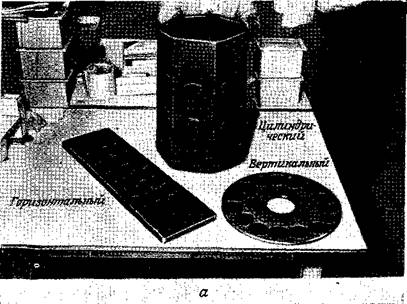
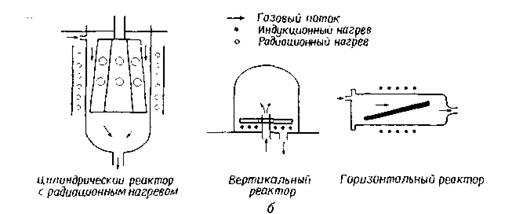 Рисунок 3.6 – а — три основных вида подложкодержателей; б — схематическое изображение трех типов реакторов Возможно применение и других покрытий, таких, как стекло-графит и пироуглерод. Последний образует плотные углеродные слои на графитовой заготовке при высокотемпературном пиролизе метана. Проколы и трещины в покрытиях, вызываемые многократными термоциклами и химической реакцией с металлами, попадающими на поверхность пьедестала при загрузке подложек с помощью пинцета, составляют основную проблему при эксплуатации подложкодержателей. Нарушение герметичности покрытия вызывает утечку примесей из объема пьедестала, загрязнение эпитаксиальных слоев и увеличение их дефектности. Другая проблема — это неоднородность температуры, обусловленная неоднородностью свойств графита или покрытия, приводящая к изменению скорости роста и уровня легирования эпитаксиального слоя. Реакционную трубу или колпак изготавливают из кварца. Требования к чистоте или прозрачности кварца определяются видом используемого реактора. В большинстве реакторов реакционная труба во время процесса относительно холодна. Такие реакторы называют реакторами с «холодной стенкой». Принудительное воздушное охлаждение хорошо отводит излишнее тепло. Индуктор и другие металлические части изготавливают водоохлаждаемыми. Некоторые реакторы с «холодной стенкой» имеют дополнительную наружную трубу, позволяющую охлаждать реакционную трубу с помощью воды. При проведении процесса нанесения поликристаллического кремния из газовой фазы в реакторе с горячей стенкой реакционная труба покрывается кремнием. При индукционном нагреве энергию для проведения реакции подают за счет нагревания подложкодержателя. Затем энергия передается подложке посредством теплопроводности и излучения. Так как кремний при комнатной температуре не нагревается на частотах менее 50 МГц, то используют косвенный нагрев машинным генератором частотой 10 кГц или самовозбуждающимся ВЧ-генератором частотой 500 кГц. В последнем служае выходная мощность достигает 100 кВт, что позволяет осуществлять нагрев в больших реакторах. Водоохлаждаемый индуктор для обеспечения лучшей электрической связи помещают как можно ближе к подложкодержателю. Индуктор может быть расположен внутри и снаружи реакционной колбы в зависимости от конструкции реактора. Новый способ подвода энергии в реакционный объем — радиационный нагрев — обеспечивает лучшую однородность температуры по подложкам, чем индукционный. Энергия в этом случае излучается набором кварцевых галогенных ламп. В большинстве случаев управление процессом заключается в поддержании газовых потоков и температуры на заданном уровне. В современном оборудовании технологический цикл управляется в основном микропоцессором, а оператор только выполняет операции по загрузке и выгрузке подложек. Датчики контролируют температуру, а микропроцессор регулирует ее по мере необходимости. В реакторах с ВЧ-нагревом в качестве датчика температуры используется оптический пирометр, наведенный на подложку внутри реактора. Так как температура измеряется через кварцевую реакционную трубу, пирометр измеряет оптически эквивалентную температуру, которая обычно на 50—100 °С ниже фактической температуры, характерной для излучательной способности кремния. Это кажущееся понижение температуры должно быть учтено при исследовании температурных зависимостей процесса. Реакторы с радиационным нагревом имеют температурно-чувствительные элементы внутри реакционной камеры. Газовые потоки могут быть измерены с использованием ротаметров или измерителей потока массы. С помощью ротаметров определяют расход газа по положению стального или сапфирового шарика в конической стеклянной трубке, что требует их тщательной калибровки. Калибровка производится с учетом вязкости газа, давления, температуры и молекулярного веса. Измерители потока массы обеспечивают большую точность измерений. Принцип их действия основан на сравнении теплоемкости движущегося и неподвижного газа. Измерение проводят с помощью соленоида или термопары. Управление включением и выключением подачи газов осуществляют пневматическими клапанами. Такие клапаны предотвращают возможность взрыва от искры при наличии утечки водорода. Широкое распространение нашли три основных вида реакторов— горизонтальные, вертикальные и цилиндрические (рис. 3.6,6). Каждый из них имеет свои преимущества и недостатки. В горизонтальном реакторе можно одновременно обрабатывать большое количество пластин, однако достижение однородности параметров слоя на всей длине подложкодержателя затруднено. Вертикальный реактор обеспечивает высокую степень однородности нанесения, но сложность конструкции затрудняет его использование. Цилиндрический реактор с радиационным нагревом также обеспечивает однородность нанесения, но не может быть использован для длительной работы при температуре свыше 1200 °С. Обычный процесс для любой конфигурации реактора включает несколько стадий. Вначале реактор продувают газом-носителем (водородом) для очистки реактора от воздуха. Затем пьедестал нагревают до рабочей температуры. После установления термического равновесия (в течение 5 мин) проводят газофазное травление в среде НС1 + Н2 при 1150—120О°С. Затем пьедестал охлаждают до температуры наращивания. Продолжительность охлаждения определяется временем, необходимым для стабилизации температуры и удаления НС1 из объема реактора. На следующей стадии в реактор подают кремнийсодержащее и легирующее соединения с концентрациями, обеспечивающими скорость роста 0,2—3,0 мкм/мин и требуемый уровень удельного сопротивления. По окончании роста прекращают подачу кремнийсодержащего и легирующего соединений, снижают температуру. Когда пьедестал остынет до комнатной температуры, водород из реактора выдувается азотом для обеспечения безопасности при вскрытии реактора. В зависимости от диаметра подложек и типа реактора одновременно обрабатывают 10—30 подложек. Средняя производительность при длительности процесса ~ 1 ч составляет 20 подложек в час. § 3.3 Выбор оптимальной технологии. Эпитаксиальные слои редко получают с концентрацией примеси выше 1017 см-3. Слои с такой концентрацией используются в биполярной технологии при изготовлении транзисторов с эпитаксиальной базой. Наиболее широкое применение находят слои с концентрацией примеси от 1014 до 1017 см-3. Высокоомные слои с концентрацией примеси 1012—1014 см-3 используются для специальных видов высоковольтных и выпрямительных приборов. Для получения высокоомных слоев необходимы очень чистый реактор и кремнийсодержащее соединение с малым содержанием примеси. Кремнийсодержащие соединения с содержанием примеси менее 1013 см-3 в настоящее время доступны для использования. Автолегирование с обратной стороны зачастую устраняется маскированием этой стороны слоем окисла или нитрида кремния. Для маскирования обратной стороны непосредственно во время процесса эпитаксии в реакторе с ВЧ-нагревом может быть использован пьедестал с предварительно нанесенным поликристаллом кремния. Этот слой во время отжига в атмосфере НС1 или SiCl4(SiH2Cl2) перейдет на обратную сторону подложки. Нижний теоретический предел легирования кремния 1,45-1010 см-3 соответствует собственной проводимости кремния при 23°С. Обычно получаемая однородность удельного сопротивления по диаметру пластины составляет ±10%, а в некоторых случаях возможно получить и ±5%. Изменение этого параметра, получаемого по всем пластинам в ходе одного процесса и от процесса к процессу, оставляет не более 20% и зависит от вида реактора и типа процесса. Максимально возможная толщина эпитаксиального слоя определяется прирастанием боковых поверхностей подложки к подложкодержателю, что существенно затрудняет отделение подложек при разгрузке и приводит к их разрушению. Однако для изготовления некоторых силовых приборов изготавливаются эпитаксиальные структуры толщиной в несколько сотен микрон, что примерно соответствует предельно возможной толщине. Как указано выше, получение тонких слоев затрудняется автолегированием, однако в настоящее время выращивают слои толщиной 0,5 мкм. Освоено производство слоев с однородностью ±5% и воспроизводимостью от процесса к процессу ±5% и лучше. Как и в случае выращивания монокристаллов, выбор вида легирующей примеси ограничен. Для легирования слоев р-типа используют бор, а для легирования слоев п-типа — мышьяк или фосфор. Оригинальный метод введения легирующей примеси в реактор заключается в смешивании жидких при комнатной температуре галогенидов (ВС13 или РС13) легирующих элементов с жидкими кремнийсодержащими соединениями (SiCl4 или SiHCl3). Во время роста эпитаксиального слоя оба соединения, находящиеся в растворе, независимо испаряются в барботере. Но такой метод не вполне удобен. Так, для изменения уровня легирования необходимо сливать содержимое барботера и заливать новую смесь. Лучшие результаты дало использование гидридов легирующих элементов (RH3, В2Н6 или AsH3). При комнатной температуре это газы, и поставляются они в баллонах под давлением. Так как требуемая концентрация примеси в реакторе составляет — 10-7%, то легирующие гидриды поступают разбавленными до концентрации (2—20) 10~3% в водороде. Для контроля потока легирующей примеси используется система из трех расходомеров. Этот способ позволяет расширить диапазон изменения легирования на три порядка, в то время как использование одного расходомера обеспечивает изменение легирования в пределах одного порядка. В особенностях легирования с помощью арсина и фосфина существуют небольшие отличия, однако большинство потребителей предпочитает арсин. Выбор кремнийсодержащего соединения основывается на нескольких предпосылках. В табл. 3.1 указаны диапазоны скорости и температуры роста для различных кремнийсодержащих соединений. Силан (SiH4) обычно выбирают, когда необходимо уменьшить автолегирование бором и его диффузию из подложки с помощью уменьшения температуры роста (автолегирование мышьяком с уменьшением температуры увеличивается). Силан при высоких температурах склонен к газофазному разложению (формированию кремниевых частиц в газовом объеме около подложки), что ведет к ухудшению качества эпитаксиальных слоев. Газофазное разложение может быть подавлено добавлением НС1. Другой недостаток силана — быстрое загрязнение стенок реакционной камеры, требующее частой чистки. Кроме того, силан самовоспламеняется при концентрации более 2%. Таблица 3.1. Эпитаксиальный рост кремния в атмосфере водорода 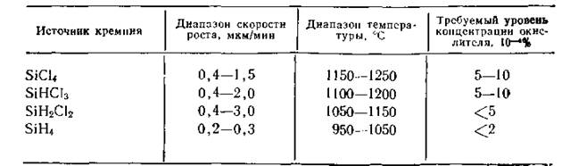 Дихлорсилан широко используется для различных целей. Он позволяет получать высокие скорости роста при относительно низкой температуре. Хотя SiH2Cl2 жидкий при комнатной температуре, он имеет высокое давление насыщенного пара (>1 атм) и может подаваться в реактор прямо из баллона. Барботер в этом случае не нужен. Как отмечено в гл. 1, три- хлорсилан применяется для получения поликристаллического кремния. Он не дает каких-либо существенных преимуществ перед тетрахлоридом кремния и редко используется для эпитаксии из парогазовой фазы. SiCl4 — наименее химически активное и наиболее широко используемое соединение из всех кремнийсодержащих соединений. Это жидкость при комнатной температуре, и вследствие низкого давления паров для активизации испарения требуется применение барботера. Высокая температура роста, необходимая для тетрахлорида кремния, делает его нечувствительным к высокому содержанию окислителей в газе-носителе и уменьшает количество вызываемых ими дефектов. Обычно эпитаксиальный реактор работает в диапазоне температур 900—1250 °С. Правильный выбор температуры процесса, расхода газа-носителя и скорости роста является сложной задачей. Ее решение обеспечивает требуемый уровень однородности толщины и удельного сопротивления слоя, уровня дефектности, смещения топологического изображения и искажения рисунка. В настоящей главе анализируются закономерности процесса, но не поясняется, как достичь всех поставленных целей, многие из которых противоречивы. Например, повышение температуры для уменьшения смещения топологического рисунка увеличивает автолегирование. Систематическое приближение к разрабатываемому процессу с использованием факторного планирования эксперимента позволит определить оптимальные параметры проведения процесса (до шести параметров, включая температуру). После проведения факторного эксперимента для определения наилучших условий работы может быть корректно выбрано кремнийсодержащее соединение. Существует постоянно корректируемая программа для моделирования эпитаксиального процесса. Такая программа— хороший помощник в факторном планировании эксперимента при отработке процесса эпитаксии из парогазовой фазы. Перед эпитаксией, как и перед окислением и диффузией, поверхность подложки необходимо тщательно отмыть. Должны быть изъяты все органические и металлические загрязнения. Твердые частицы удаляют с использованием ультразвуковой отмывки, обработкой кистями с водой или гидродинамической мойкой. С чистыми пластинами необходимо обращаться осторожно, не допуская загрязнения, особенно пылинками. Для предотвращения загрязнения всю реакционную камеру или загрузочную зону помещают в чистую комнату. Второй метод заключается в закрытии зоны загрузки чехлом и подаче в чехол потока очищенного воздуха. Молекулярно-лучевая эпитаксия. В молекулярно-лучевой эпитаксии (МЛЭ) используется не химическое осаждение из парогазовой фазы, а конденсация молекулярных пучков в вакууме. Хотя этот метод был известен с начала 60-х годов, только в последнее время была основательно изучена возможность его применения для технологии производства кремниевых приборов. МЛЭ до сих пор не использовали по двум причинам: качество эпитаксиальных структур не удовлетворяло требованиям современной технологии и отсутствовало необходимое промышленное оборудование. Рассматриваемый метод имеет некоторые преимущества по сравнению с эпитаксией из парогазовой фазы I. Основное преимущество заключается в низкой температуре процесса. Снижение температуры процесса уменьшает диффузию примеси из подложки и автолегирование, снимает ограничения, существующие при изготовлении тонких слоев методом эпитаксии из парогазовой фазы. Другое преимущество МЛЭ состоит в высокой точности управления уровнем легирования. Поскольку легирование при использовании данного метода является безынерционным в отличие от эпитаксии из газовой фазы, появляется возможность получать сложные профили легирования смесь обычно на большой скорости продувается над их поверхностью. Пьедестал нагревается от источников инфракрасного излучения высокой интенсивности, высокочастотными индукторами или резистивным способом. Существуют также различные виды вертикальных реакторов, которые обычно состоят из колоколообразной реакционной камеры, а подложки расположены вертикально на вращающейся пирамиде. Как и в горизонтальных реакторах, пирамида нагревается инфракрасным излучением, индукционным или резистивным способом. Все эти реакторы, работающие при атмосферном давлении, обладают низкой производительностью, требуют применения ручной загрузки и разгрузки подложек и обеспечивают однородность по толщине пленок обычно не лучше ±10%. Поэтому им на смену пришли реакторы с горячими стенками, работающие при пониженном давлении. Плазмохимическое осаждение в таких реакторах или в реакторах с параллельным расположением пластин используется также в тех случаях, когда необходима очень низкая температура процесса (100—350 °С). К потенциальным достоинствам процессов осаждения при пониженном давлении следует отнести однородность покрытия, прецизионное управление составом и структурой пленок, низкую температуру процесса, высокую скорость осаждения, высокую производительность и низкую себестоимость процесса осаждения. Добиться одновременного осуществления всех указанных преимуществ, как правило, невозможно. Поэтому зачастую приходится идти на компромисс. Например, для проведения процесса при низких температурах необходимо уменьшить скорость осаждения. Поэтому дальнейшее развитие процессов; осаждения связывают с более полным использованием преимуществ метода газофазного осаждения и поисками оптимального соотношения между параметрами процесса применительно к. специфике формируемых приборов. На рисунках 3.7 – 3.9 представлены различные типы электронно-лучевых установок. Тип 1 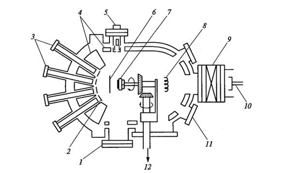 1 – экран; 2, 3 – соответсвенно заслонки и фланцы эффузионных ячеек; 4 – экраны; 5 – дифрактометр; 6 – заслонка; 7 – подложка на вращаюемся держателе;8 – ионизационный индикатор; 9 – шлюзовый клапан; 10 – вакуумный шлюз для смены образцов; 11 – смотровон окно; 12 – двигатель для вращения подложки Рисунок 3.7 – Схема установки для молекулярно-лучевой эпитаксии (вид сверху) Тип 2 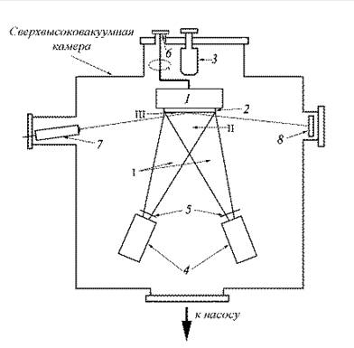 1 – держатель образца; 2 – образец; 3 – масспектрометр; 4 – эффузионные ячейки; 5 – заслонки; 6 – манипулятор; 7 – электронная пушка ДОБЭ; 8 – люминесцентный экран Рисунок 3.8 – Схема простейшей установки для молекулярно-лучевой эпитаксии Тип 3 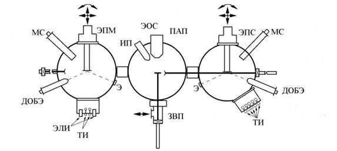 ПАП — модуль подготовки и анализа подложек, ЭПМ — модуль эпитаксии элементарных полупроводников, металлов и диэлектриков, ЭПС - модуль эпитаксии полупроводниковых соединений, ЗВП - модуль загрузки и выгрузки подложек; МС - масс- спектрометры, ЭОС - электронный оже-спектрометр, ДОБЭ - дифрактометры отраженных быстрых электронов, Э - люминесцентные экраны, ИП - ионная пушка; ТИ - тигельные испарители, ЭЛИ - электронно-лучевые испарители Рисунок 3.9 – Схема многомодульной установки для молекулярно-лучевой эпитаксии
|
| (С) БГУИР |